Latest episode ·
Coach Tony and driving tips, and “Shift Point”
Listen to “Coach Tony and driving tips, and Shift Point” 40 min

Car dealers since 1923. Racers since 1972.
Next, the GT — a tribute to the Chevrolet Corvette.
Le Mans, June 1976.
Over the decades the family's dealerships sold Studebaker, Oldsmobile, Chevrolet, Buick, Pontiac, Cadillac, Honda, Saab, Peugeot, Aston Martin, Maserati and Ferrari.
Makes sold by the family's dealerships over the decades. Source: Fra Noi, “Andrettis' heirs”, February 2005.
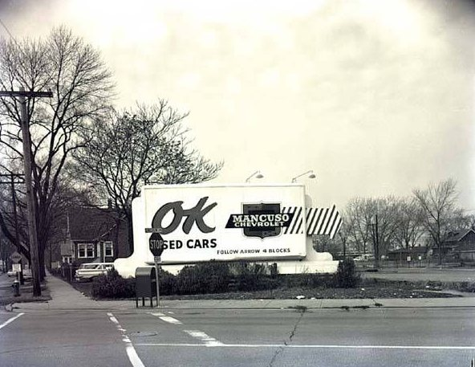
Jim was also an avid road rallyer, a regular in a Great Lakes version of Italy's Mille Miglia — the first sign of the racing that would follow.
Source: Fra Noi, “Andrettis' heirs”, February 2005.
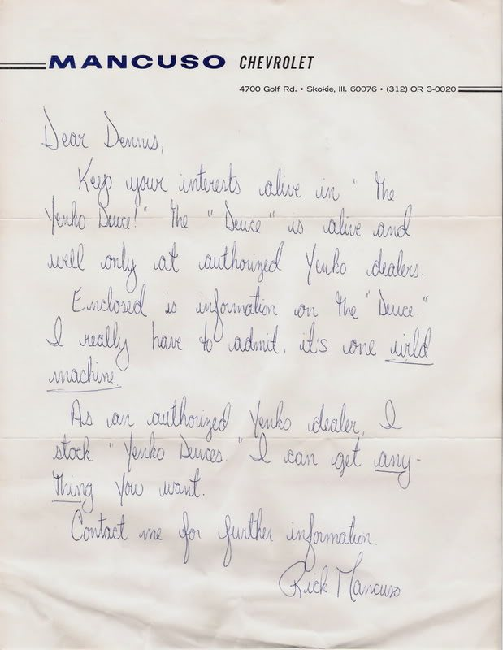
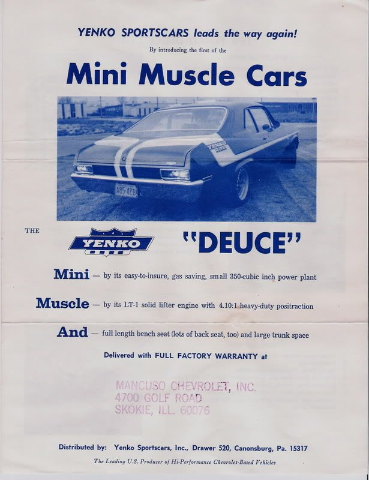
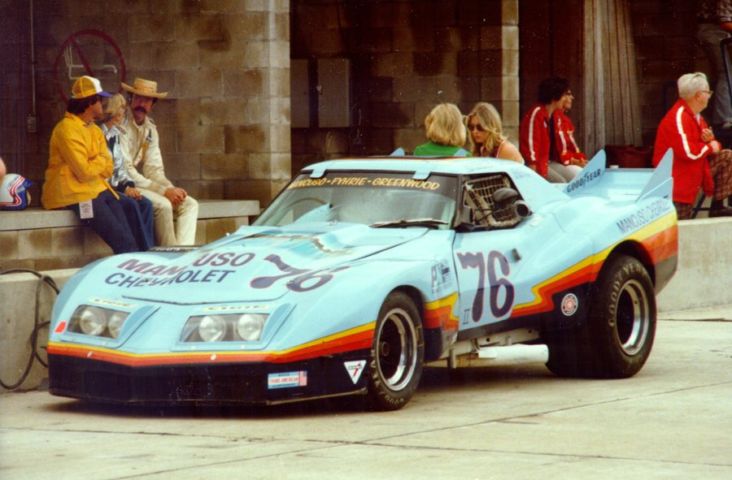
Rick Mancuso took the green flag in 1972, in a 1958 Corvette prepared to B-Production specs. By 1976 Mancuso Chevrolet had its own Corvette on track — the pale-blue #76, by the Revell kit's account the first “customer” car John Greenwood built.
Source: Fra Noi, February 2005; Revell model kit (customer-car claim, to be confirmed).
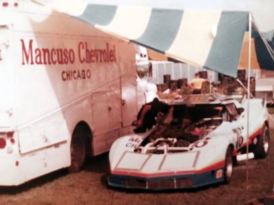
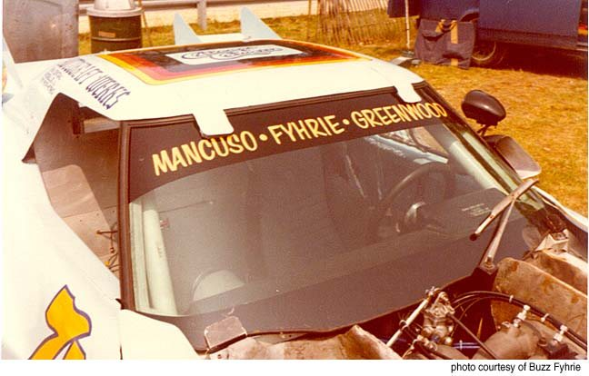
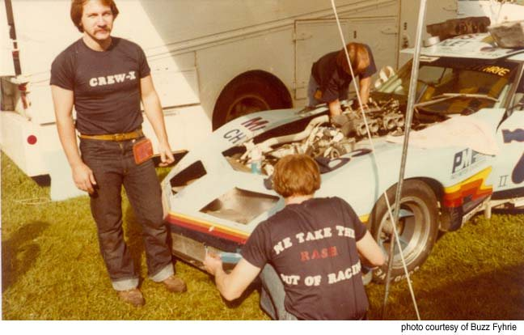

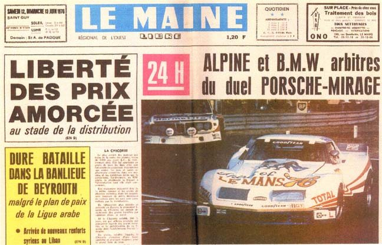
For America's bicentennial the French government invited Mancuso and his team to race a Corvette at Le Mans. Rick stayed home to run the business and turned the Greenwood wide-body Corvette over to his teammates. A fuel malfunction ended its race in the eighth hour.
Source: Fra Noi, February 2005. The session of the 218 mph run is not recorded.
Rick became president and CEO of Lake Forest Sports Cars, the family's dealership for premium imports. He raced a Ferrari BB512LM, 308 GTB, 348, 355 and F40, a Maserati Bi-Turbo SSGT and a Mosler Consulier GTP in endurance races at Sebring, Daytona, Mid-Ohio and Nelson Ledges. His brother Rob was crowned 1986 SCCA Midwest Council champion.
The dealership has since been sold. It remains part of the family's story.
Source: Fra Noi, February 2005; the family, October 2026.

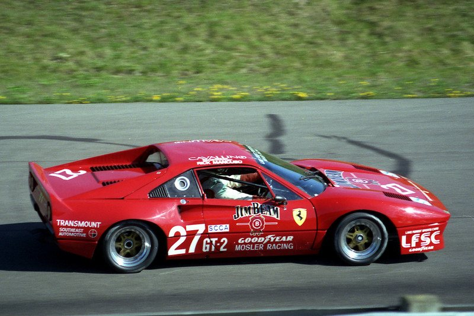
Rick's son Adam started driving go-karts at 12 and trained at the Skip Barber Racing School at Road America. Father and son raced custom Lola Sports Racers in SCCA competition, painted Aston Martin racing green and carrying the family crest on the nose.
Source: Fra Noi, February 2005.

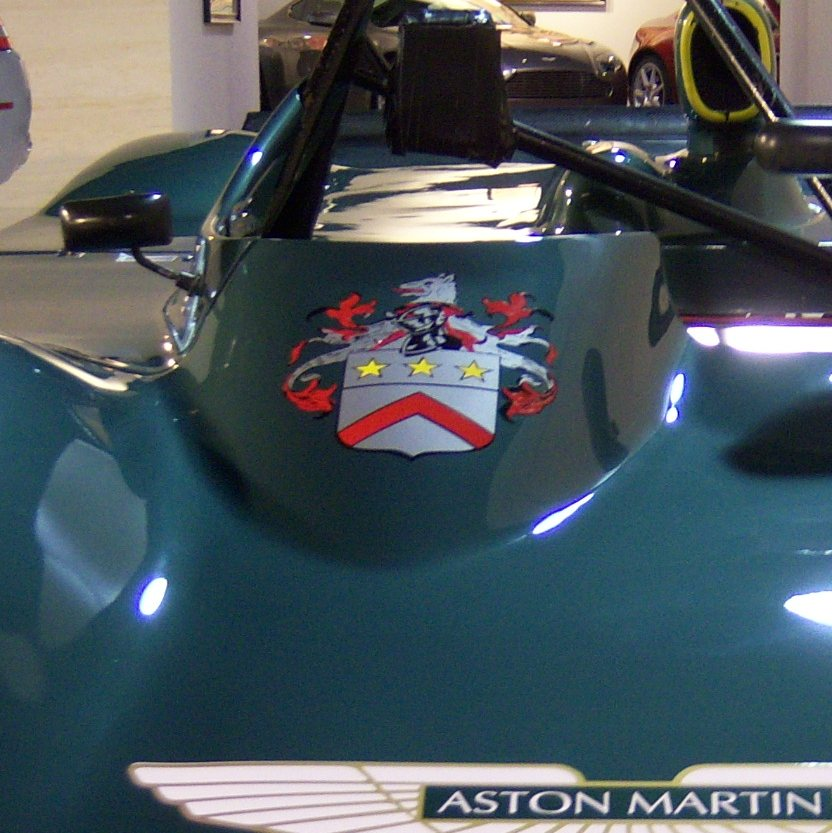

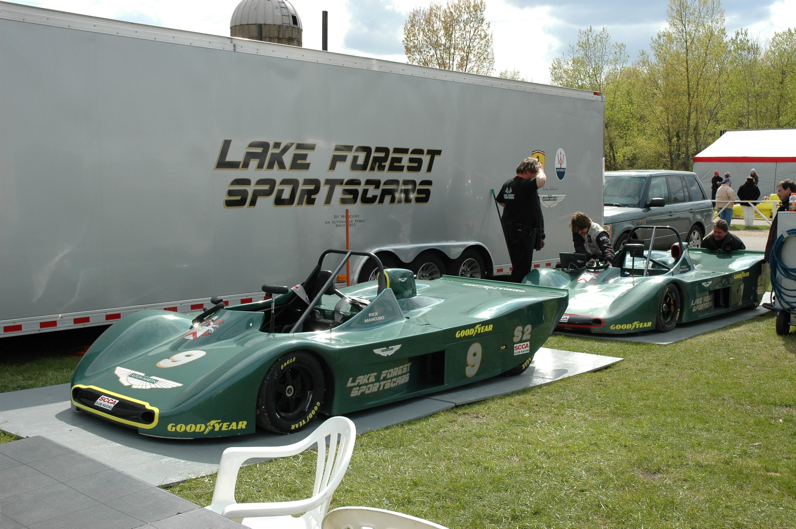
Launching soon
A tribute to the iconic Chevrolet Corvette — the authenticity and style of original Corvettes, with modern comfort and driveability. Only by Mancuso.
AM 560 The Answer · Chicago
The love of cars and the joy of driving: the business and the pleasure of all things automotive, with industry guests and callers.
Latest episode ·
Listen to “Coach Tony and driving tips, and Shift Point” 40 min
From the show's public feed, 16 October 2026. The live site will update from the feed.
The family's posts will appear here once the account is connected. Account handle to be confirmed.
About the GT, the family's cars, or anything else.